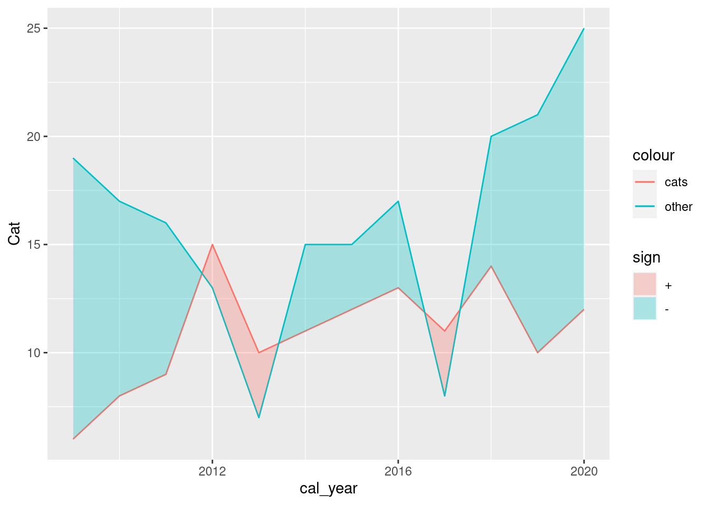
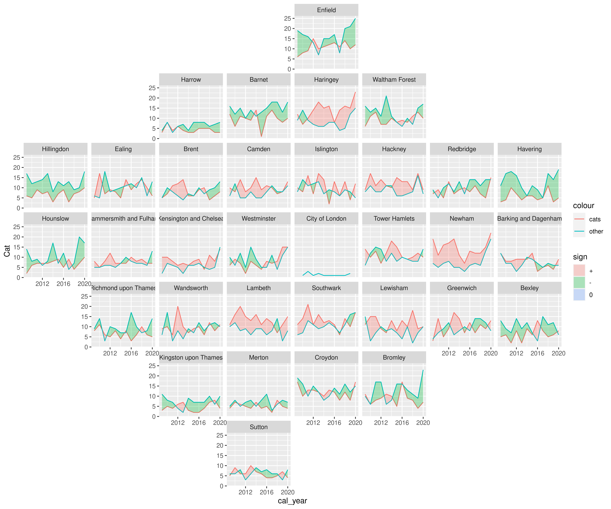
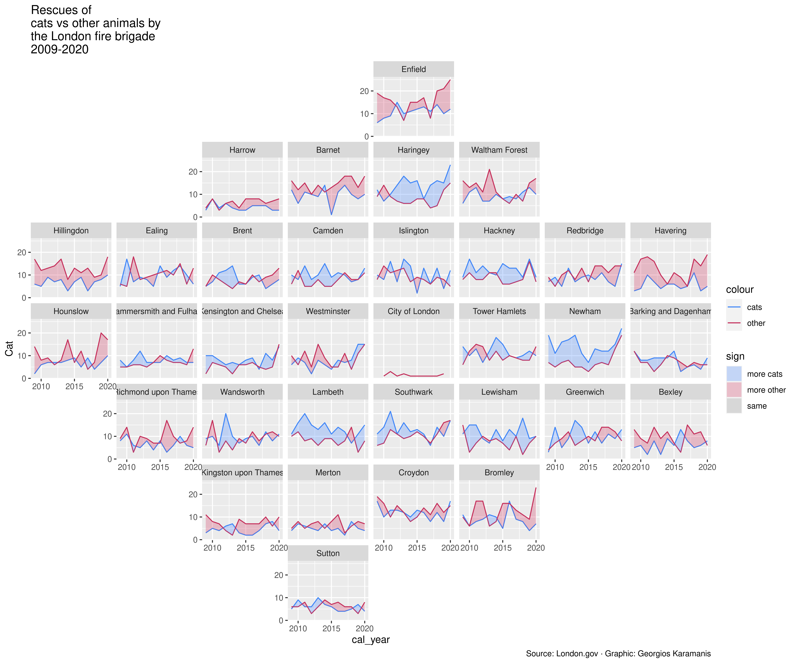
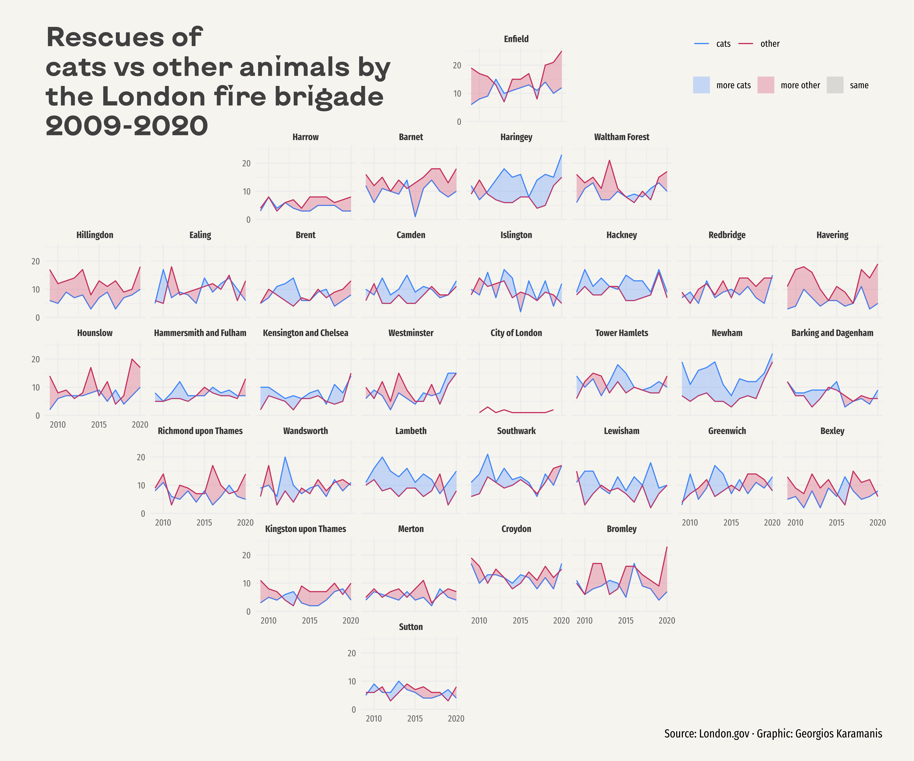

About
This page showcases the work of Georgios Karamanis, built for the TidyTuesday initiative. You can find the original code on his Github repository here.
Thanks to him for accepting sharing his work here! Thanks also to Tomás Capretto who split the original code into this step-by-step guide! 🙏🙏
As a teaser, here is the plot we’re gonna try building:

Load packages
Let’s start by loading some libraries. On top of the
tidyverse, today’s plot also depends on
geofacet
and ggh4x. The first one provides geofaceting functionality for ggplot2, and
the later provides some utility functions such as the
stat_difference() that is going to be used here.
Note: At the moment of writing, this guide uses the
development version of ggh4x (v0.1.2.1.9), which can be
installed from Github with
devtools::install_github("teunbrand/ggh4x")library(tidyverse)
library(geofacet)
library(ggh4x)Fira Sans Compressed is going to be the default font for the plot and KyivType Sans is going to be used for the title. If you are a little unsure about how to work with custom fonts in R, this post is for you.
Load and prepare the data
This guide shows how to create a highly customized and beautiful multi-panel lineplot to visualize the evolution of animal rescues by the London fire brigade for the different boroughs in the city.
The data for this post originally comes from London.gov by way of Data is Plural and Georgios Karamanis. This guide uses the dataset released for the TidyTuesday initiative on the week of 2021-06-29. You can find the original announcement and more information about the data here. Thank you all for making this work possible!
Let’s get started by loading the dataset:
animal_rescues <- readr::read_csv(
"https://raw.githubusercontent.com/rfordatascience/tidytuesday/master/data/2021/2021-06-29/animal_rescues.csv"
) %>%
# Capitalize the type of animal
mutate(animal_group_parent = str_to_sentence(animal_group_parent))
The geofacet library imports grid layouts from the
grid-designer
repository. This repository has a lot of different grid layouts that
represent the actual geographical layout of a large variety of
neighborhoods within cities, cities within states, or even states
within countries. Given that each borough in London represents a panel
in today’s viz, we load the dataset named
gb_london_boroughs_grid which represents the layout of
the boroughs in London.
borough_names <- gb_london_boroughs_grid %>%
select(borough_code = code_ons, name)Next, let’s process the data a little.
rescues_borough <- animal_rescues %>%
# Keep rescues that happeend before 2021
filter(cal_year < 2021) %>%
# We're interested on whether it is a Cat or another type of animal.
mutate(animal_group_parent = if_else(animal_group_parent == "Cat", "Cat", "Not_Cat")) %>%
# Count the number of rescues per year, borough, and type of animal
count(cal_year, borough_code, animal_group_parent) %>%
# Make the dataset wider.
# * One column for the number of cat rescues
# * Another column for the number of other animal rescues
pivot_wider(names_from = animal_group_parent, values_from = n) %>%
# Merge the data with the info about the grid layout
left_join(borough_names) %>%
# Drop entries with missing name
filter(!is.na(name)) Basic lineplot
Today’s chart consists of several lineplots that are arranged in a custom layout. Let’s start by trying to create only one of the panels in the plot. This will be very helpful to understand all the details behind this wonderful chart.
# Let's say we select the borough named "Enfield"
df <- rescues_borough %>%
filter(name == "Enfield")
ggplot(df, aes(x = cal_year)) +
# One line for Cat rescues
geom_line(aes(y = Cat, color = "cats")) +
# Another line for Not_Cat rescues
geom_line(aes(y = Not_Cat, color = "other")) +
# stat_difference() from ggh4x package applies the conditional fill
# based on which of Not_Cat and Cat is larger.
stat_difference(aes(ymin = Not_Cat, ymax = Cat), alpha = 0.3)

Multipanel layout via geofaceting
Fortunately, it’s quite easy to extend the single-panel plot to a
multi-panel plot with ggplot2. In this case, the
facet_geo() function from the
geofacet package is going to provide the faceting based
on the different boroughs in London
plt <- ggplot(rescues_borough, aes(x = cal_year)) +
geom_line(aes(y = Cat, color = "cats")) +
geom_line(aes(y = Not_Cat, color = "other")) +
stat_difference(aes(ymin = Not_Cat, ymax = Cat), alpha = 0.3) +
# vars(name): Use the values in the name variable to create the subpanels
# grid = "gb_london_boroughs_grid": use the London boroughs grid that comes
# with the geofacet package
facet_geo(vars(name), grid = "gb_london_boroughs_grid")
plt

Wonderful! Sometimes it’s hard to believe that only one extra line of code separates this plot from the previous one.
Annotations, scales, and colors
While geofaceting is really cool, it’s still necessary to improve the appearance of the plot. The first improvement is to use more attractive colors for the lines and the fill – having different colors for these geoms does not feel quite right in this case. Then, breaks are manually specified for both axes. And finally, a title and a caption are added to give more information about the content of the plot and the source of the data.
plt <- plt +
# Colors for the lines
scale_color_manual(values = c("#3D85F7", "#C32E5A")) +
# Colors for the fill. They are lighter versions of the line colors.
# The third one is required because lines are sometimes equal
scale_fill_manual(
values = c(
colorspace::lighten("#3D85F7"),
colorspace::lighten("#C32E5A"),
"grey60"
),
labels = c("more cats", "more other", "same")
) +
# Set breaks along both axes
scale_x_continuous(breaks = seq(2010, 2020, 5)) +
scale_y_continuous(breaks = seq(0, 20, 10)) +
# Add labels
labs(
title = "Rescues of\ncats vs other animals by\nthe London fire brigade\n2009-2020",
caption = "Source: London.gov · Graphic: Georgios Karamanis"
) +
# Specify the order for the guides
guides(
# Order indicates the order of each legend among multiple guides.
# The guide for 'color' will be placed before the onde for 'fill'
color = guide_legend(order = 1),
fill = guide_legend(order = 2)
)
plt

The plot is one step closer to its final version but some details need to be taken care of before it is ready. For example, panel labels need extra space in order to fit and the default theme is just too boring. Let’s work on those final tweaks!
Final chart
Now it’s time to customize the theme. First of all, the default font is replaced with Fira Sans Compressed. This is a slight change that makes the plot look much better. Then, the legend is shifted to a much better position on the top-right corner of the plot. The default takes valuable horizontal space and does not take advantage of the extra space due to the empty panels. And finally, we customize the background color as well as the styles for the title and the caption. Just note how better the viz looks thanks to using the KyivType Sans font for the title.
plt <- plt +
# A minimalistic theme with no background annotations
theme_minimal(base_family = "Fira Sans Compressed") +
theme(
# Top-right position
legend.pos = c(0.875, 0.975),
# Elements within a guide are placed one next to the other in the same row
legend.direction = "horizontal",
# Different guides are stacked vertically
legend.box = "vertical",
# No legend title
legend.title = element_blank(),
# Light background color
plot.background = element_rect(fill = "#F5F4EF", color = NA),
plot.margin = margin(20, 30, 20, 30),
# Customize the title. Note the new font family and its larger size.
plot.title = element_text(
margin = margin(0, 0, -100, 0),
size = 26,
family = "KyivType Sans",
face = "bold",
vjust = 0,
color = "grey25"
),
plot.caption = element_text(size = 11),
# Remove titles for x and y axes.
axis.title = element_blank(),
# Specify color for the tick labels along both axes
axis.text = element_text(color = "grey40"),
# Specify face and color for the text on top of each panel/facet
strip.text = element_text(face = "bold", color = "grey20")
)
plt 